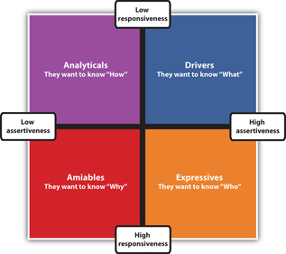

Adaptive sellingSituation in which the salesperson adapts or customizes her selling style based on the behavior of the customer. occurs when a salesperson adapts, changes, and customizes her selling style based on the situation and the behavior of the customer.Barton A. Weitz, Stephen B. Castleberry, and John F. Tanner, Jr., Selling: Building Partnerships, 7th ed. (New York: McGraw-Hill Irwin, 2009), 151. Adaptive selling allows you to truly listen, understand the customer’s needs, and then adapt your conversation and presentation accordingly. On the other hand, if you were giving a canned presentationA selling presentation that is exactly the same for every customer., you wouldn’t be able to learn what the customer thinks is important. For example, if you were selling landscaping to a customer, you wouldn’t know if the customer wanted the landscaping to provide privacy or create a view. The only way you would find out is by listening, asking questions, and adapting your recommendations and presentation accordingly. Adaptive selling is much easier to do when you establish a relationship with the customer.
Adaptive selling takes place in many situations in business and in life. It is the selling skill that allows you to adapt your communications to a person or situation. Chances are you already use adaptive selling in your everyday life, but you may not realize it. Do you approach your parents differently than your friends? Do you speak to a professor differently than you do to your roommate? These are examples of adaptive selling.
It’s also likely that you interact with each of your friends differently. Do you have a friend that needs tons of information to make a decision, while another friend makes a decision in an instant? Do you know people who want to talk about their decisions before and after they make them and those who just decide and don’t say a word? Understanding diversity, or the different ways people behave, is the cornerstone of adaptive selling.
What makes people so different in their style, perceptions, and approaches to things is defined in the social style matrixAn established method of identifying patterns of communication and behavior.. It is an established method that helps you understand how people behave so you can adapt your selling style accordingly. The social style matrix is based on patterns of communication behavior identified by David Merril and Roger Reid.Barton A. Weitz, Stephen B. Castleberry, and John F. Tanner, Jr., Selling: Building Partnerships, 7th ed. (New York: McGraw-Hill Irwin, 2009), 155. It plots social behavior based on two dimensions: assertiveness and responsiveness. In the matrix below, the x axis is assertiveness, which indicates the degree to which a person wants to dominate or control the thoughts of others. The y axis represents responsiveness, which is the degree to which a person outwardly displays emotions or feelings in a relationship.Rick English, “Finding Your Selling Style,” San Diego State University, Marketing 377 class notes, chapter 5, http://www-rohan.sdsu.edu/~renglish/377/notes/chapt05 (accessed July 7, 2009). In Figure 3.4 "Social Style Matrix", you can see the four quadrants; each quadrant represents one of four social styles: analyticalA social style that describes people who focus on facts, details, and analysis to make decisions., driverA social style that describes people who like to have all the facts and make decisions quickly., amiableA social style that describes people who focus on personal relationships in their decision making., and expressiveA social style that describes people who rely on their feelings to make decisions.. Each of these styles describes a different type of behavior.Barton A. Weitz, Stephen B. Castleberry, and John F. Tanner, Jr., Selling: Building Partnerships, 7th ed. (New York: McGraw-Hill Irwin, 2009), 151.
Figure 3.4 Social Style MatrixTodd Duncan, “Your Sales Style,” Incentive, December 1, 1999, 64–66.
Each of the social styles has specific characteristics that are important to keep in mind as you prepare and present your sales presentation. Adapting to someone’s social style demonstrates the law of psychological reciprocity, which says that when you adapt to someone’s style, that person will move toward your style. In short, you are inspiring trust by acting according to the old adage of the golden rule.Ron Zemke, “Trust Inspires Trust,” Training 10, January 1, 2002. So, whether you are asking to borrow your mother’s car or asking someone on a date, understanding the social style matrix is important to get the result you want.
Do you know someone who only wants the facts to make a decision? Perhaps it’s your father or mother or a professor. Analyticals are all about the facts. They are defined by low responsiveness and low assertiveness. In other words, they like to hear about the pros and cons and all the details before they decide. They are likely to have a financial or technical background, and they pride themselves on being an expert in their field. They want to hear about the tangible results, timelines, and details before they make a decision. In fact, they are the ones who will actually read the directions before they put together a new grill or set up a wireless home network. They are so focused on facts that they prefer to disregard personal opinions in their decision making. They like to understand all the facts before they decide so they know exactly how the product, service, or contract arrangement will work.Barton A. Weitz, Stephen B. Castleberry, and John F. Tanner, Jr., Selling: Building Partnerships, 7th ed. (New York: McGraw-Hill Irwin, 2009), 158.
You might have some visual cues that will help you identify an analytical. She probably dresses conservatively and has her achievement awards proudly displayed on her office wall. She is organized and focused on work activities.Barton A. Weitz, Stephen B. Castleberry, and John F. Tanner, Jr., Selling: Building Partnerships, 7th ed. (New York: McGraw-Hill Irwin, 2009), 159.
If you are selling to a customer who is an analytical, she will ask you very specific questions about all the details, and she will respond positively if you make her feel as if she is right. In other words, don’t challenge her facts and point of view. Rather, provide history, data, financial details, and other facts in an organized, structured format. She will ask many questions so that she clearly understands the product or service. Since it’s important for her to make the right decision, she will take the time to gather all the facts. Because she puts so much effort into making the right decision, she tends to be loyal to the people from whom she buys, believing she doesn’t need to reevaluate the same facts.
Adapt your style to an analytical by focusing on the “how.” Slow down your presentation and let her take it all in; don’t make her feel rushed. Use facts, historical data, and details to be sure she has all the information she needs to make the decision. Use guarantees or warranties to reduce any perceived risk. Give her the time she needs to analyze, evaluate, and decide.Sandra Bearden, “The Psychology of Sales: Savvy Selling Means Tailoring to Type,” UAB Magazine 20, no. 2 (Fall 2000), http://main.uab.edu/show.asp?durki=41089 (accessed February 13, 2010).
You’ve probably watched Super Bowl champion Peyton Manning, quarterback for the Indianapolis Colts play football on television or the Internet. One of the traits that makes him a champion is the fact that he is focused exclusively on winning each game. When he is on the field, everything else is in second place in his mind. Peyton Manning is a driver.
Drivers have some characteristics that are the same as analyticals in that they like to have all the facts to make their decision. However, drivers are different from analyticals because they make decisions quickly. On the social style matrix, they are in the low responsiveness, high assertiveness quadrant. These are the people who are “control freaks”; they are decisive and controlling. They work with people because they have to; they see other people only as a means to their end of achievement. They are smart, focused, independent, and competitive. They have little regard for the opinions of others; a driver is rarely described as a “people person.” They are high achievers who are in a hurry to meet their goals.Rick English, “Finding Your Selling Style,” San Diego State University, Marketing 377 class notes, chapter 5, http://www-rohan.sdsu.edu/~renglish/377/notes/chapt05 (accessed July 7, 2009). They don’t want facts just for the sake of having them; they want relevant information that will help them decide quickly.
Like the analyticals, drivers dress conservatively and display their achievement awards on the wall of their office. A calendar is usually prominent to keep focus on how long it will take to achieve something. Because they are not focused on the feelings or attitudes of other people, drivers usually do business across the desk rather than on the same side of the desk.Barton A. Weitz, Stephen B. Castleberry, and John F. Tanner, Jr., Selling: Building Partnerships, 7th ed. (New York: McGraw-Hill Irwin, 2009), 158.
The best way to adapt to a driver is to be professional and to the point. Don’t spend too much time on small talk; get to the point quickly. Provide options so that he can feel as if he is in control. Include a timeline so he can see how quickly he can get results.
Actress Reese Witherspoon was recently named the Honorary Chairperson of the Avon Foundation for Women because of her ability to unite women around the cause of breast cancer.Avon Foundation for Women, “Reese Witherspoon Joins Avon Foundation for Women and San Francisco General Hospital to Celebrate 5th Anniversary of Avon Comprehensive Breast Center,” press release, May 11, 2009, http://www.avoncompany.com/women/news/press20090511.html (accessed July 8, 2009). She rallies people and brings them together by focusing on the greater good, but she doesn’t assert herself. She is an amiable.
An amiable is most likely to be described as a “people person.” Amiables are team players who focus on innovation and long-term problem solving. They value relationships and like to engage with people whom they feel they can trust. They are less controlling than drivers and more people oriented than analyticals because they are in the low assertiveness, high responsiveness quadrant of the matrix.
Amiables provide some visual clues because their offices are typically open and friendly. They often display pictures of family, and they prefer to work in an open environment rather than sitting across the desk from you. They tend to have a personal style in their dress, being casual or less conservative than analytics or drivers.Barton A. Weitz, Stephen B. Castleberry, and John F. Tanner, Jr., Selling: Building Partnerships, 7th ed. (New York: McGraw-Hill Irwin, 2009), 159.
When you are presenting to an amiable, establish a personal relationship. She will be more likely to discuss issues with you. When you demonstrate your personal commitment, she will be open to doing business with you.
An expressive is intuitive, charismatic, persuasive, nurturing, and engaging. Oprah Winfrey is an expressive; she has excellent rapport with people, even people she has never met. Relationships are important to her, but only to help her achieve her higher goal of giving her viewers inspiration and a better way to live their lives.
Expressives are creative and can see the big picture clearly; they have a vision and use their style to communicate it and inspire people. They don’t get caught up in the day-to-day details. Expressives build relationships to gain power, so people like employees, viewers, or voters are very important to them. Status and recognition are also important to them.
Since expressives are not big on details, you might find their offices to be a bit disorganized, even cluttered and messy. Their offices are set up in an open format, as they would prefer to sit next to you rather than across the desk from you. They avoid conservative dress and are more casual with their personal style. They want to engage with you and talk about the next big idea.Barton A. Weitz, Stephen B. Castleberry, and John F. Tanner, Jr., Selling: Building Partnerships, 7th ed. (New York: McGraw-Hill Irwin, 2009), 159.
When you are selling to an expressive, take extra time to discuss everything. Give them recognition and approval. Appeal to their emotions by asking them how they feel about the product or service; focus on the big picture of what is possible as a result of buying your product or service. If you try to dazzle them with facts and figures, you won’t get very far.
Table 3.1 Selling Style Summary
| Social Style You’re Selling to | How to Adapt |
|---|---|
| Analyticals |
|
| Drivers |
|
| Amiables |
|
| Expressives |
|
Source: Todd Duncan, “Your Sales Style,” Incentive, December 1, 1999, 64–66.
Before you think about the social styles of other people, you might find it helpful to think about your own social style. Are you very emotional when you express your opinions, or are you more reserved and formal? Are you the type of person who agrees with everyone, or are you extremely interested in the details? You might want to take a few minutes to take the Keirsey Temperament Sorter to understand your social style. But don’t stop here; visit your campus career center as it most likely offers several assessment tools that can help you identify your social style.
Take the Keirsey Temperament Sorter to Determine Your Social Style
It would be easy to get stuck in your own style preference. But getting out of your comfort zone and adapting quickly to your customer’s style preference can make the difference between a sale and a “no thanks.” It’s important to note that most people are a combination of styles, but when you understand the basic behaviors of each style and how to adapt, you can increase your chances for success.Todd Duncan, “Your Sales Style,” Incentive, December 1, 1999, 64–66.
For each of the following situations, identify the social style of the buyer and suggest how you would adapt to appeal to the buyer: